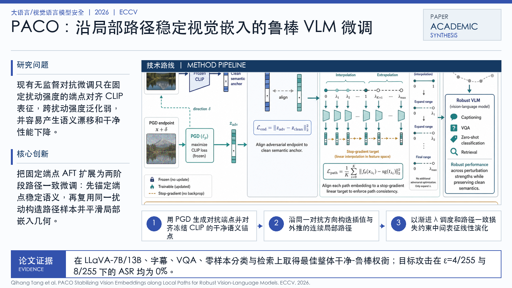

Problem
解决的问题
现有无监督对抗微调只在固定扰动强度的端点对齐 CLIP 表征，跨扰动强度泛化弱，并容易产生语义漂移和干净性能下降。
Research on LLMs and VLMs · 2026 · ECCV
PACO Stabilizing Vision Embeddings along Local Paths for Robust Vision-Language Models
Problem
现有无监督对抗微调只在固定扰动强度的端点对齐 CLIP 表征，跨扰动强度泛化弱，并容易产生语义漂移和干净性能下降。
Value
在 LLaVA-7B/13B、字幕、VQA、零样本分类与检索上取得最佳整体干净-鲁棒权衡；目标攻击在 ε=4/255 与 8/255 下的 ASR 均为 0%。
Paper-grounded Academic Summary
该代表页依据原文摘要、贡献段与方法图注生成。方法视觉由 ImageGen 按论文证据逐篇绘制，中文研究问题、技术路线、创新点与实验结论采用确定性排版，以保证内容与字符准确。
打开原文第 6 页
Technical Route
Innovation